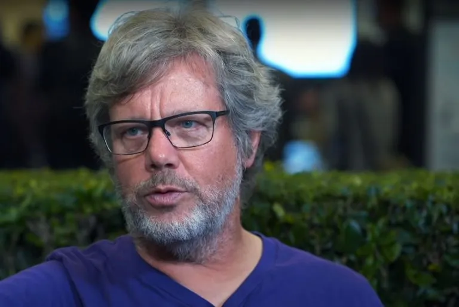
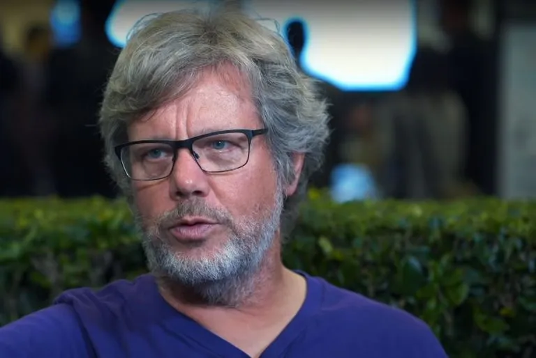

Guido van Rossum is the creator of the Python programming language. He grew up in the Netherlands and studied at the University of Amsterdam, where he graduated with a Master's Degree in Mathematics and Computer Science. His first job after college was as a programmer at CWI, where he worked on the ABC language, the Amoeba distributed operating system, and a variety of multimedia projects. During this time he created Python as side project. He then moved to the United States to take a job at a non-profit research lab in Virginia, married a Texan, worked for several other startups, and moved to California. In 2005 he joined Google, where he obtained the rank of Senior Staff Engineer, and in 2013 he started working for Dropbox as a Principal Engineer. In October 2019 he retired. After a short retirement he joined Microsoft as Distinguished Engineer in 2020. Until 2018 he was Python's BDFL (Benevolent Dictator For Life), and he is still deeply involved in the Python community. Guido and his family live in Silicon Valley, where they love hiking, biking and birding.
Guido van Rossum created Python in 1990 while working at CWI in Amsterdam. He was the language's BDFL until he stepped down in 2018. He has held various tech jobs, including Senior Staff Engineer at Google and Principal Engineer at Dropbox. He is currently a Distinguished Engineer at Microsoft, where he is still actively involved in Python's development. Born and raised in the Netherlands, he moved to the US in 1995 and currently lives with his family in the Bay Area.
Python's development history is a fascinating journey that spans decades, starting as a personal project and evolving into one of the most widely used programming languages in the world. Here's an overview:
1. Origins (Late 1980s - Early 1990s)
1989: Guido van Rossum began working on Python during his Christmas holidays. He was inspired by the ABC programming language and wanted to create a language that was easy to learn and use but also powerful enough for complex tasks.
1991: The first version of Python, Python 0.9.0, was released. It included core features like functions, exception handling, and the module system, as well as data types like lists, strings, and dictionaries.
2. Python 1.x Era (1994 - 2000)
Python 1.0 was released. It introduced features like functions, modules, and exception handling.
Over the next few years, updates added important features such as:
Support for complex numbers.
A more robust standard library.
Improved exception handling mechanisms.
3. Python 2.x Era (2000 - 2010)
2000: Python 2.0 was released with major new features like:
List comprehensions.
Garbage collection based on reference counting.
Unicode support.
Python 2 became very popular, but its design had some limitations, leading to the development of Python
3.Over the decade, Python 2.x saw numerous updates, including improvements to libraries and language features.
4. Python 3.x Era (2008 - Present)
2008: Python 3.0 was released as a complete redesign to address inconsistencies and modernize the language. However, it was not backward-compatible with Python.
4.Major changes included:
Print function: print became a function rather than a statement.
String handling: Clear separation between Unicode strings (str) and byte sequences (bytes).
Improved integer division.
Python 3 faced slow adoption initially because many libraries were still Python 2-only.
Over time, Python 3 gained widespread acceptance, and Python 2 reached its end of life on January 1, 2020.
5. Modern Python Development
Python now follows a regular release schedule, with updates every 18-24 months.
Key features in recent versions include:
Type hinting (PEP 484) for better code clarity and static analysis.
Asynchronous programming features (async/await).
Enhanced performance and standard library tools.
6. Python Community
Python is developed under an open-source model managed by the Python Software Foundation (PSF).
It has one of the most active and welcoming developer communities, contributing to its libraries, documentation, and tools.
 
